001 · 强 · 四川省
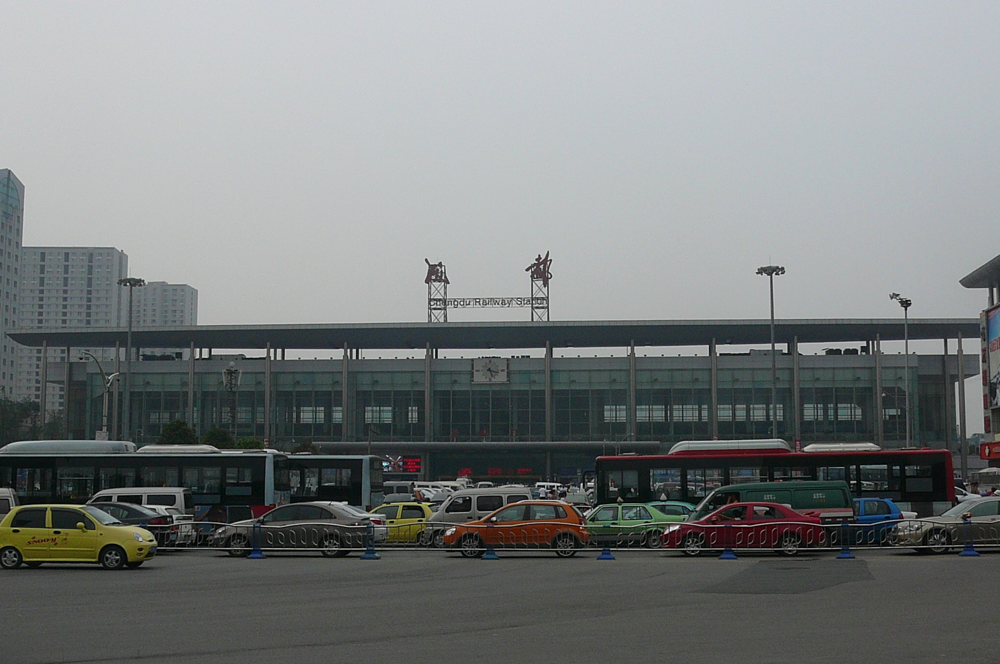
站房上“成都”和英文站名可读；前景有车辆及城市道路。
优先核验；标签：仅来源标注；2048×1360
Nihongarden · CC BY-SA 4.0
具体来源文件页管理侧材料：标签仅来源标注；不提供定位模型或过程评分者。本批模型调用0。原图保留来源元数据。

站房上“成都”和英文站名可读；前景有车辆及城市道路。
优先核验；标签：仅来源标注；2048×1360
Nihongarden · CC BY-SA 4.0
具体来源文件页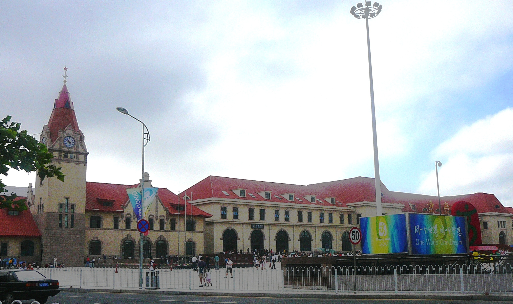
钟楼、红色坡屋顶、拱门；原始分辨率可读“青岛”和QINGDAO，不能归入文字缺失组。
备用候选；标签：仅来源标注；2541×1507
Djhobo9 · Public domain
具体来源文件页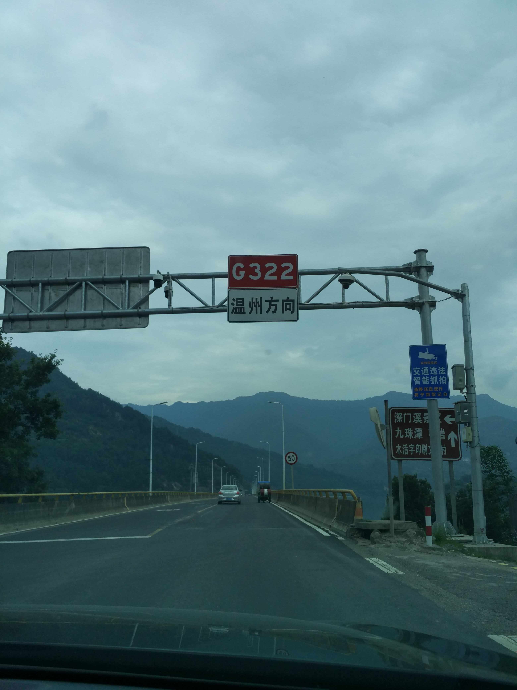
路牌G322和“温州方向”可读；道路、山体与护栏；文字表示目的地，未证明拍摄地。
备用候选；标签：仅来源标注；3120×4160
Damingsama · CC BY-SA 3.0
具体来源文件页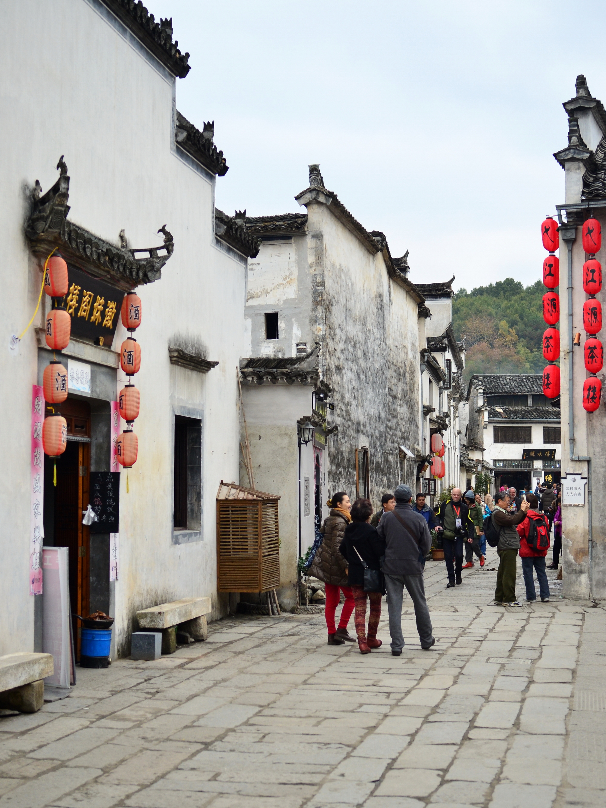
白墙、深色瓦顶、马头墙、窄石板路；商铺文字可见，不能直接记文字缺失。
备用候选；标签：仅来源标注；1920×2560
颐园新居 · CC BY-SA 4.0
具体来源文件页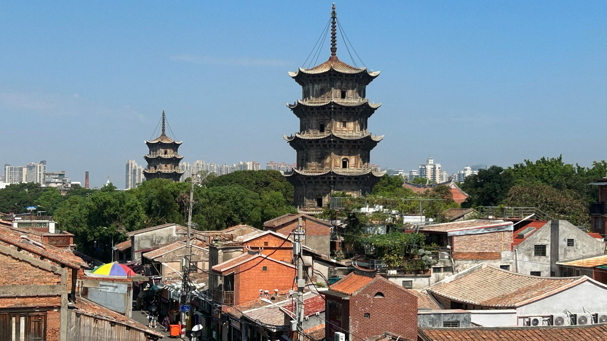
两座多层石塔、红瓦民居屋顶、树木和远处楼房；未辨认地名文字；视点较高。
优先核验；标签：仅来源标注；3961×2228
HMGiovanniV · CC BY-SA 4.0
具体来源文件页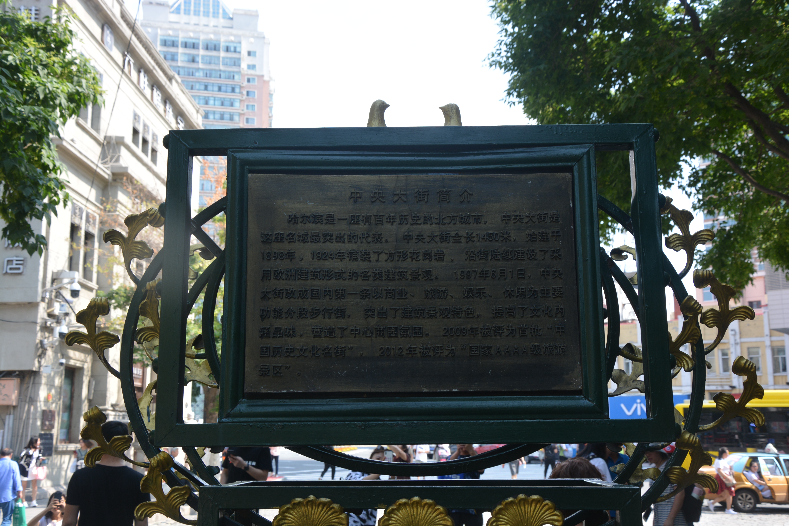
前景为暗部文字说明牌，后有街道、树木和建筑；部分细字未辨认，不补写整块牌文。
备用候选；标签：仅来源标注；6000×4000
Jonashtand · CC BY-SA 4.0
具体来源文件页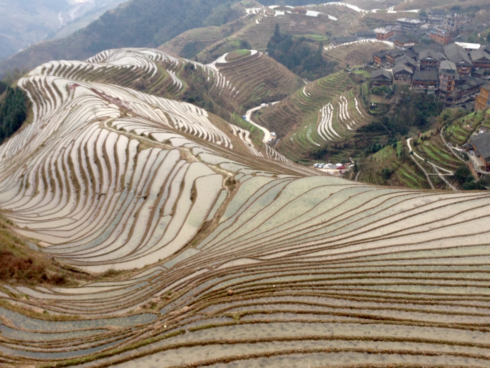
蓄水梯田沿山坡弯曲分布，远处村屋与植被；未见可读文字。
优先核验；标签：仅来源标注；2048×1536
Bernessaw · CC BY-SA 4.0
具体来源文件页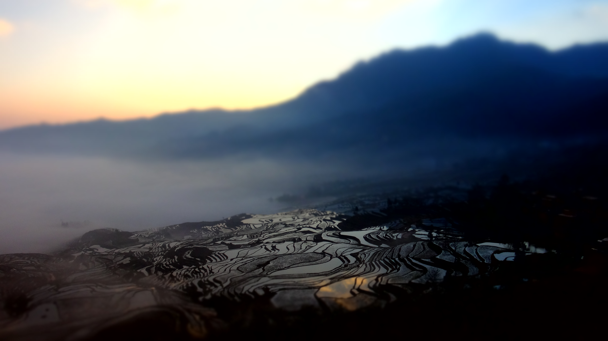
暮色或晨光中的蓄水梯田、山体轮廓与雾气；暗部细节不足，未见可读文字。
优先核验；标签：仅来源标注；4896×2752
Chiu Ho-yang · CC BY-SA 2.0
具体来源文件页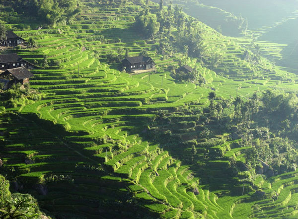
绿色梯田、山坡植被和散落村屋；未见可读文字；原始尺寸仅600×441。
优先核验；标签：仅来源标注；600×441
Katelulu · CC BY-SA 3.0
具体来源文件页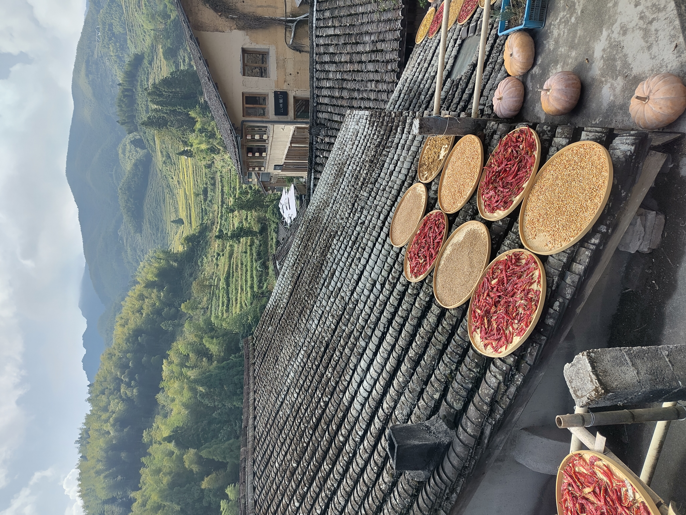
前景瓦屋顶、竹盘晾晒物，背景绿色山坡和梯田；远处小标牌未辨认；与009的前景差异明显。
优先核验；标签：仅来源标注；3072×4096
Nico le terrible · CC BY 4.0
具体来源文件页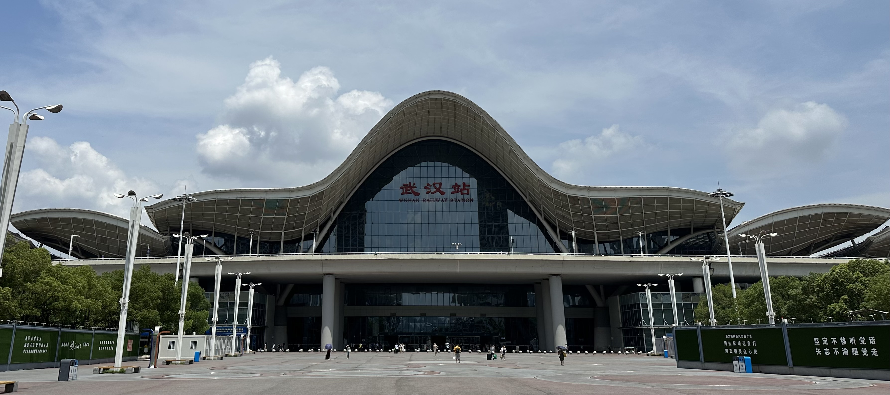
站房上“武汉站”和英文站名清楚；大跨度曲线屋顶、广场与树木。
优先核验；标签：仅来源标注；3573×1588
Zheng Zhou · CC BY-SA 4.0
具体来源文件页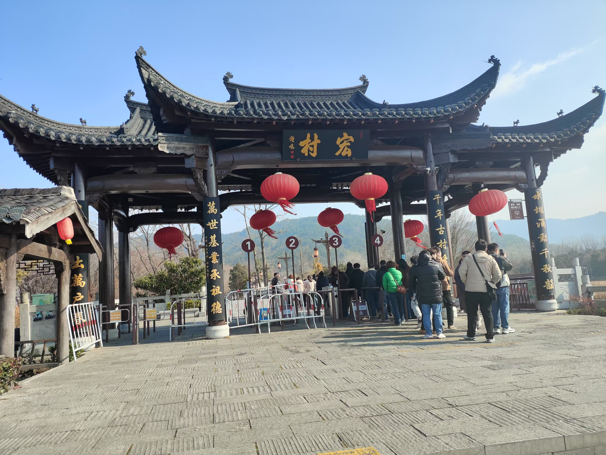
入口牌匾“宏村”清楚；木构多层屋顶、红灯笼、游客和山体背景。
优先核验；标签：仅来源标注；4624×3472
HCCB3947 · CC BY-SA 4.0
具体来源文件页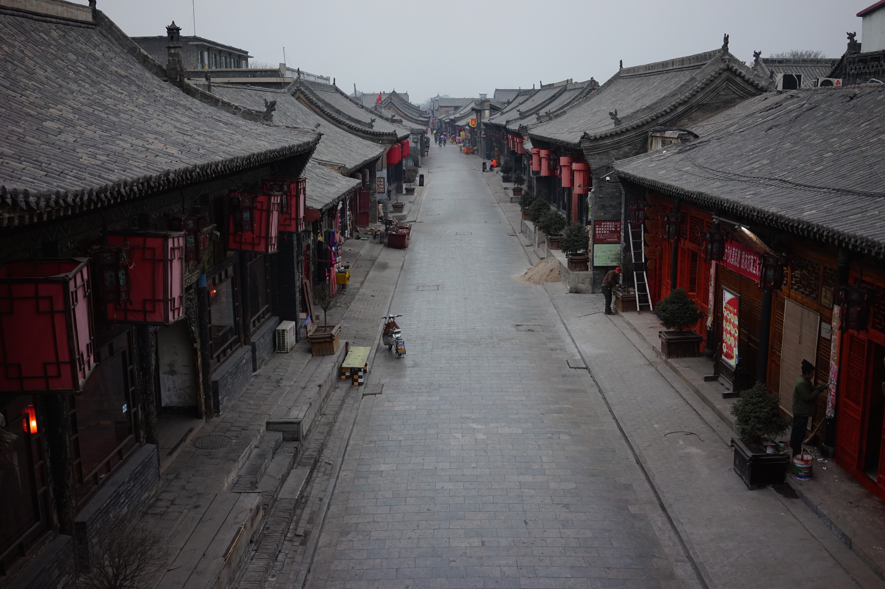
高处俯视传统街道，灰瓦屋顶、红灯笼、石板路、店牌；远处及暗部文字未完整辨认，部分近处标牌文字可见。
备用候选；标签：仅来源标注；6000×4000
Jan Bockaert · CC BY-SA 2.0
具体来源文件页
河岸木构楼房、城门式建筑、灰瓦屋顶、石墩步道、船与山坡植被；远处招牌、竖旗未完整辨认。
优先核验；标签：仅来源标注；8256×5504
Chensiyuan · CC BY-SA 4.0
具体来源文件页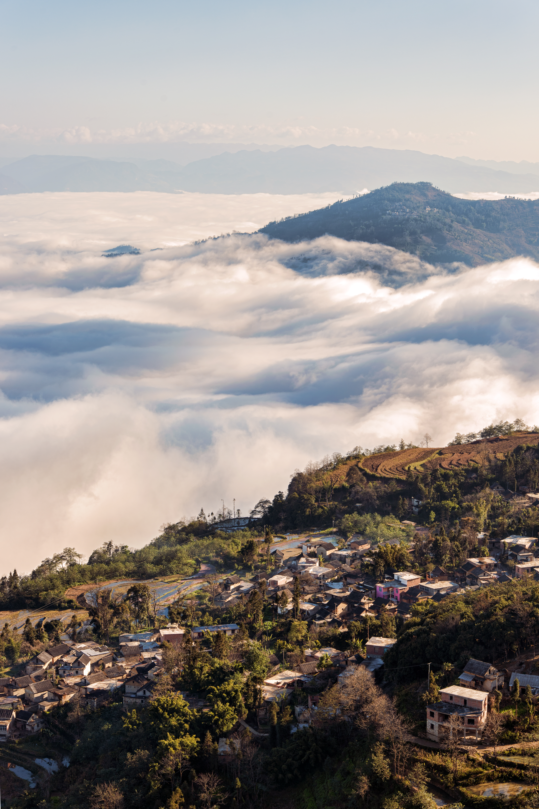
云海、山体、村落、坡上梯田和树木；未见可读文字，视点高，真实地面机位待核验。
备用候选；标签：仅来源标注；4744×7120
chensiyuan · CC BY-SA 4.0
具体来源文件页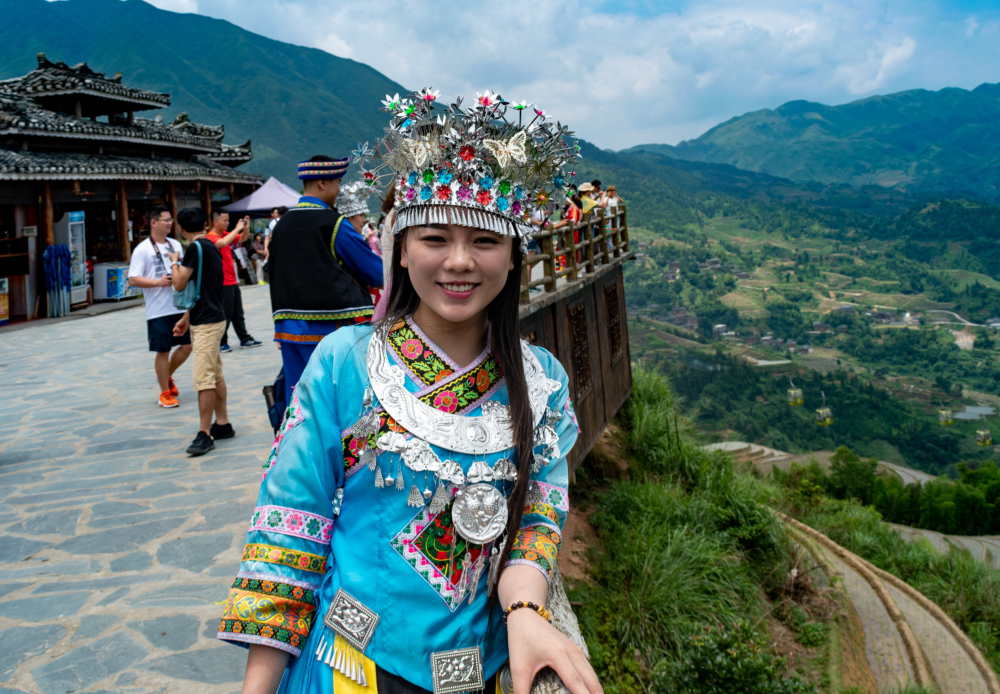
人物和银色饰物、蓝色刺绣服饰占据前景；木亭、栏杆、背景山地与梯田；不按外观判断人物民族或拍摄省份。
备用候选；标签：仅来源标注；3000×2084
xiquinhosilva · CC BY 2.0
具体来源文件页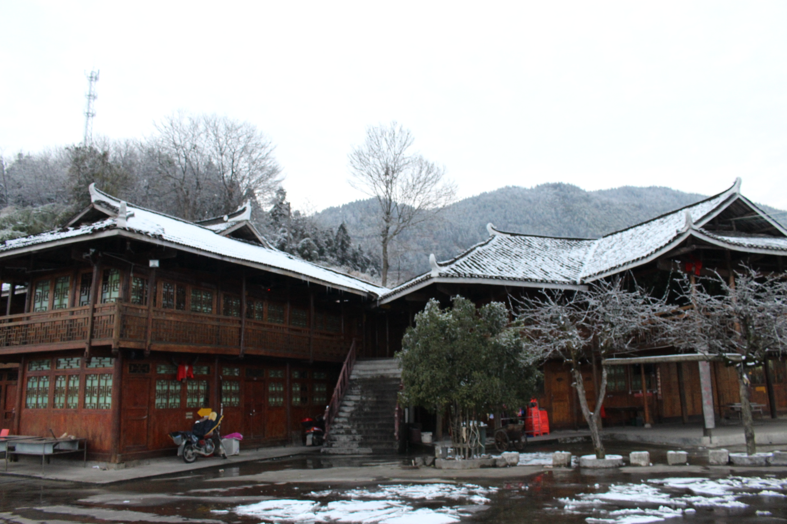
木构民居、灰瓦顶、石阶、积雪、树木和山坡；画面不以大面积梯田为主，未辨认地点文字。
备用候选；标签：仅来源标注；1920×1280
Huangdan2060 · CC BY 3.0
具体来源文件页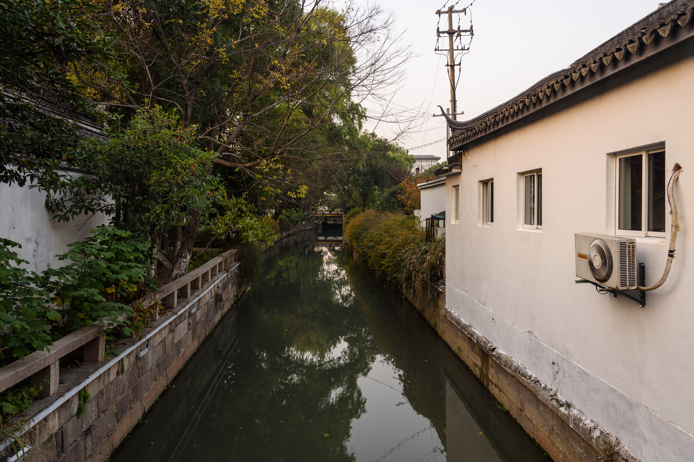
窄水道、白墙灰瓦、石岸栏杆、树木、电线与空调；空调HITACHI品牌可读，未见可读地点名。
优先核验；标签：仅来源标注；5940×3960
King of Hearts · CC BY-SA 4.0
具体来源文件页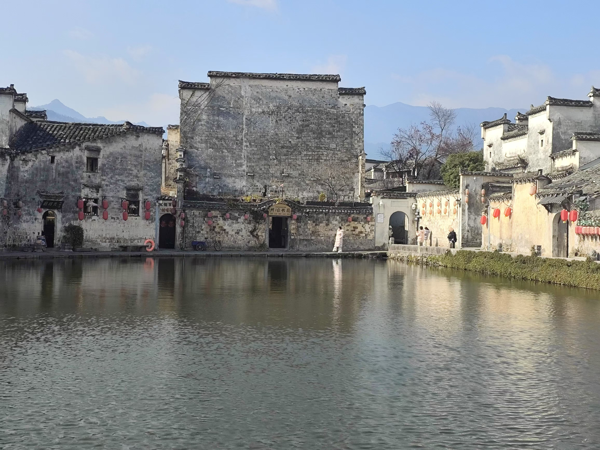
水面、白墙灰瓦和马头墙、红灯笼、远山；“月沼书局”可读，其他小牌未完整辨认。
备用候选；标签：仅来源标注；4624×3472
HCCB3947 · CC BY-SA 4.0
具体来源文件页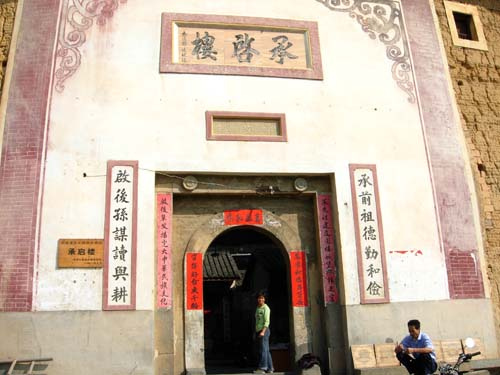
建筑入口和高墙、门匾“承启楼”及竖向对联可见；来源原图仅500×375，仍有可读建筑名称。
备用候选；标签：仅来源标注；500×375
Bolobolo · Public domain
具体来源文件页